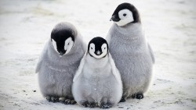

This website is devoted to penguins.
Penguins are cool because they live in the Southern Hemisphere in cooler waters. Many misconeptions about penguins are common. For example, many winter scenes have polar bears and penguins in the same image when they never live together.
The claymation animation Pengu popularized penguins with Pengu's comical experiences in modern day society.
Penguins live in Antartica, but are found throughout the southern points of South America, Africa, and Australia too!